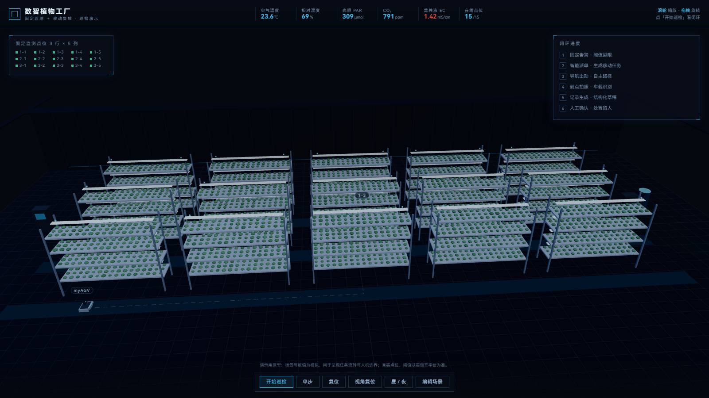
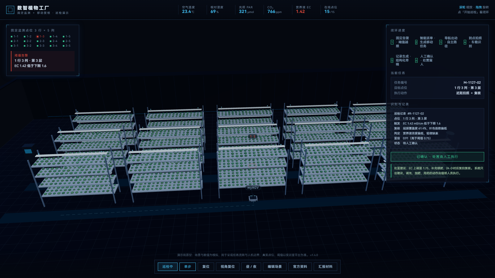
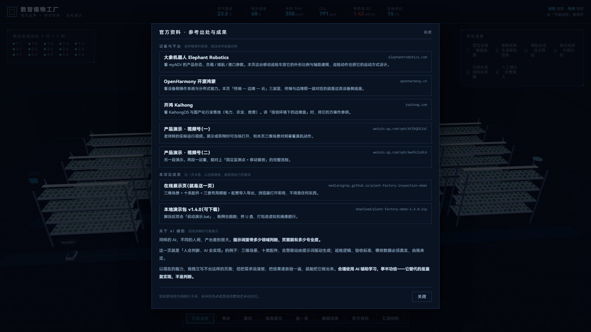
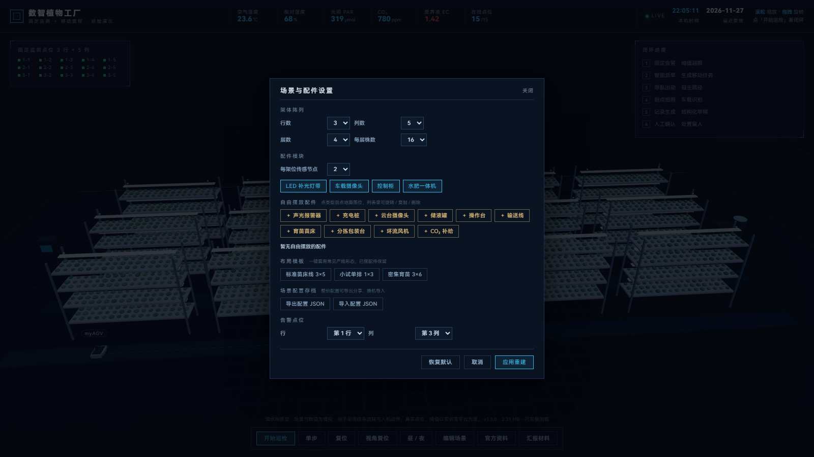

从老师推荐的官网，到可当场点开的展示页 v1.6.0：
页面能操作，包能下载，面板能打开。
设备厂商、开源系统、行业方案、实拍视频，处理动作各不相同；认厂商、读参数、对场景、落模块。
一套内容几个载体：官网页做门面且内嵌演示，展示页给人现场操作，下载包给断网的教室，网页版 PPT 讲这套动作怎么复用。
面板能打开、包能下载、数字能复核，不靠口头描述。
来源：曾恒老师 2026-11-26 群内转发的官网与视频号链接 · 处理结果见展示页 v1.6.0
同一批链接，动作不同：查参数、看系统能力、找落地参照、对真实运行。先分类，再决定读什么。
四个类别已在展示页「官方资料」面板中逐条对应，域名与视频链接可当场点开核对。
前三步靠判断，第四步才交给 AI 实现；顺序反过来，页面就只剩好看的壳。
先看首页的定位句与产品线，判断它是设备商、系统方，还是行业方案商。
负载、轴距、续航、接口，只取与巡检动作有关的那几项，其余不往页面里抄。
挑两条这条巡检线真用得上的能力写进流程，用不上的明确标成「本项目未使用」。
五条入口、两块成果、三句说明，写成一块面板；AI 出界面，自己逐条验收。
判断错了，AI 只会把错的东西做得更漂亮：前三步定对错，第四步定快慢。
官网能读的很多，落进三维场景的只有外形、动作、命名；其余参数只在讲方案时口头补。
车体比例、轮距、举升高度按产品页形态建模，不放大。
到点 — 拍照 — 回传 — 告警，对应巡检路线与告警联动。
型号、配件名、端侧系统名沿用官网叫法，不自造新词。
官网是参照，不是素材库：能借的只有叫法与比例，判断还得自己做。

读完实训室手册与《数智植物工厂》建设方案，页面里能站住的只剩一段：把「需现场处理」翻成一次到点确认。其余不重复造。
场景联动：设备或定时触发，执行开关、属性下发，或指定摄像头抓拍；告警分等级走「提醒 → 需现场处理」。
「需现场处理」只写结果，不写谁去、先去哪个架位、看到什么才算处理完。
告警 → 任务卡（点位、动作、顺序）→ 车到点拍一张 → 记录写成草稿 → 最后一步仍回到人。
方案里「数字孪生」那一栏到「看」为止；我们把这辆车放进去，让它按派单跑一遍。
约 100 ㎡；NFT 浅液流多层立体，空间利用率 3–5 倍；叶菜 25–40 天。
叶菜模组全光谱 LED 无级调光；茄果模组单层净高 ≥1.7 m，顶光加侧补光。
变频多联空调、臭氧、除湿加湿；EC / pH 在线，自动配肥补水与酸碱中和，闭环循环。
八大实训模块含数字孪生；这页是那一栏的雏形，不另立门户。
口径来源：实训室《用户操作手册（简化版）》29 页 ·《7 楼部分实训室介绍》·《数智植物工厂》建设方案 21 页。数字是材料里原有的，不是估的；材料里没写进这一页的内部细节，也不拿来撑场面。
官网页做门面且内嵌演示，展示页给人操作，下载包给断网的教室，网页版 PPT 讲复用；几处说的是同一件事。
几件同源：面板里加一条入口，官网页、展示页、下载包、这份 PPT 一起改。字节数为 2026-11-28 复核值。
底栏两个按钮，盖在三维场景上的一层，不跳页、不刷新；点遮罩或 Esc 就关掉。

域名用等宽字右对齐，点开即走，不落到本页。
都挂真实地址，能当场下。
同一个 AI，不同人用出来不一样：判断在提示词里。
模式四步可点选、PPT 页序对照、效果三图带「证明什么」；另有一键全屏、六页大字的演讲模式。
2026-11-28 复核，请求线上地址实测，不用「已上线」四个字代替。

index.html 首页响应，含内嵌 three.js 与两组截图
演示包 v1.6.0，解压双击「启动演示.bat」即用
两块面板打开后计数：条目 7、截图 3、控制台报错 0
复核方式：playwright-core 驱动 Edge，1600×900，请求线上地址后点开面板取值。
边界写明白了，别人才知道这套东西能不能直接搬走、搬走要改哪几处。
AI 把页面做出来，判断和验收还是自己的活。